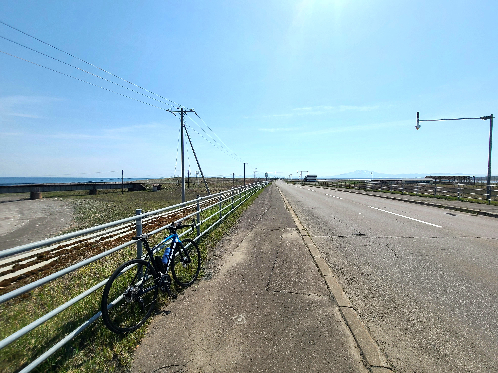

浜小清水ルート


爽快感抜群！！スプリンター向けのルートです。
網走駅から始まる地獄のアップダウンを抜けた先には、遮るものが何もない圧倒的な真っすぐな一本道を駆け抜けることができます。
- ・総距離：７４．５ｋｍ
- ・獲得標高：５９７ｍ
- ・ルートのデータは、こちらからダウンロードできます
Loading...

爽快感抜群！！スプリンター向けのルートです。
網走駅から始まる地獄のアップダウンを抜けた先には、遮るものが何もない圧倒的な真っすぐな一本道を駆け抜けることができます。